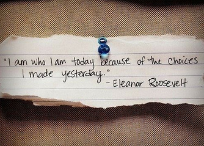

I Am Poems Version #2 are going to be slightly different from what we explored yesterday. As with yesterday though, you will need to follow the directions carefully so as to maintain the type of I Am poem that we are writing and not diverge into a different format. As with yesterdays I Am Poem, this poem focuses on who you are as a person.|
Directions: Follow the following step-by-step directions and create one I Am Poem, Version #2: 1st Stanza
|
Student Example: I AM I am a carefree girl who loves horses. I wonder if there ever was a horse that could fly. I hear the stomping of a hundred mustangs on the desert in Arabia. I see a horse with golden wings soaring into the sunset. I want to ride swiftly over a green meadow. I am a carefree girl who loves horses. I pretend to be an Olympic jumper. I feel the sky pressing down on me as I ride along a sandy shore. I touch the clouds on a winged horse. I worry that I'll fall off and become paralyzed. I cry when a colt dies. I am a carefree girl who loves horses. I understand that I will not be able to ride every day of my life. I say, let all horses roam free. I dream about the day when I have a horse of my own. I try to be the best rider in the world. I hope to ride all my life. I am a carefree girl who loves horses. ---Julianne Moore (Grade 7) |